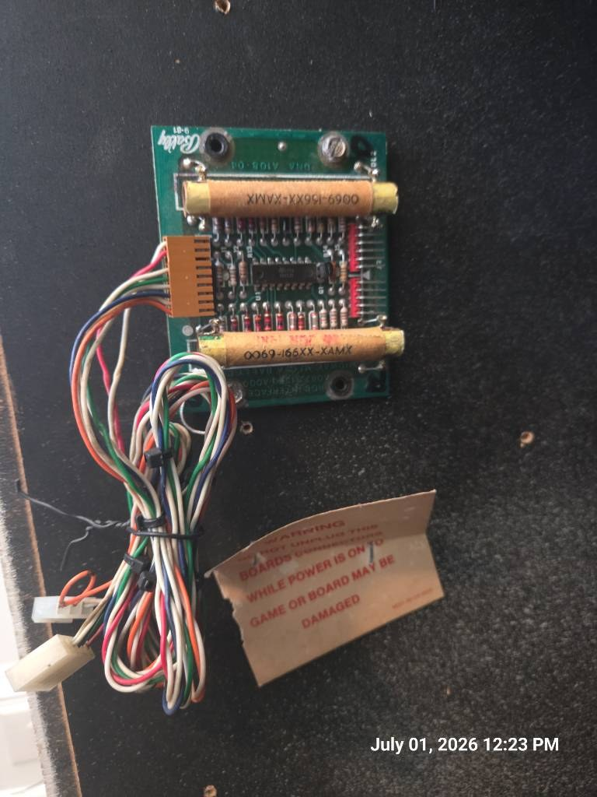

The 91363 RGB Interface Board is the small Bally/Midway Astrocade video daughterboard that turns the card rack's native video signals into monitor-ready analog RGB plus negative composite sync.

Original 91363-style RGB interface PCB.
The Astrocade arcade video system does not leave the card rack as plain arcade RGB. The game board feeds this interface with R-Y, B-Y, and VIDEO. The interface delays, biases, and mixes those signals through the RGB matrix circuit, then presents the monitor harness with separate R, G, B, and -SYNC outputs.
Factory service warning
Do not unplug or insert this PCB with the game powered. The loose warning card in the reference photo is exactly right: hot-plugging the board or monitor harness can damage the interface board, the game board, or monitor input circuitry.
Important correction
The two large tan cylinders on this board are not power resistors. In the factory drawing they are DL1 and DL2, both listed as 270 ns delay lines. The main IC is listed as U1 TBA530, an RGB matrix pre-amplifier, not an LM3900 op-amp.
Board identity
Factory part number
The Wizard of Wor board list identifies the RGB Interface Board as A082-91363-A/B000. The factory component drawing in the manual shows A082-91363-B000.
Cabinet role
It is not a game logic card. It is the external video conversion board that sits between the card rack and the color CRT monitor harness.
Shared family usage
Wizard of Wor, Gorf, and Robby Roto board sets are commonly associated with this RGB interface family. Space Zap is the important exception: it is a black-and-white game and does not require the RGB Interface Board.
Revision caution
Use the board number as a family identifier. Harnesses, monitor chassis, cabinet size, and game-specific assemblies can change how the same interface circuit is wired in the machine.
The 12-pin card-rack side brings in R-Y, B-Y, and VIDEO. The red and blue difference paths run through the two 270 ns delay lines before entering the matrix IC.
RGB matrix
U1 combines the delayed color-difference signals with the video/luminance path to create analog red, green, and blue monitor drive outputs.
Sync extraction
The sync output is derived from the incoming VIDEO line through the small transistor path around Q1, then routed to output pin 9 as negative sync.
Power rails
The board uses +12V, +5V, and -5V. Treat the grounds on the video pairs as signal returns, not random spare wires.
Debugging translation
A missing color can be a card-rack source problem, a bad 91363 matrix path, a cracked connector joint, a delay-line fault, a monitor input problem, or a wiring error. Start by separating source-side inputs from monitor-side outputs.
Factory drawing and schematic
The attached Wizard of Wor manual scan includes the 91363 component drawing and schematic as manual pages 85 and 86. The schematic title block identifies the circuit as RGB INTERFACE for CCRS and shows part number A082-91363-B000.
RGB matrix pre-amplifier. Generates the red, green, and blue output channels from the color-difference and video inputs.
DL1
270 ns delay
Delay line in the B-Y path. The large tan cylinder is not a load resistor.
DL2
270 ns delay
Delay line in the R-Y path. Its Midway part code matches the markings seen on original boards.
Q1
2N4401
Small-signal NPN transistor used in the sync output path.
CR1
1N5232B
Zener/diode element in the incoming video/sync conditioning path.
J1
9-pin header
Monitor-side output: RGB, grounds, key, and negative sync.
J2
12-pin header
Card-rack/game-board side input: power, grounds, color-difference inputs, video, and key.
12-pin input vector: card rack to RGB interface
This connector brings the native Astrocade video signals and power rails from the game board/card-rack harness into the 91363 board.
Pin
Signal
Original field note
Practical reading
1
Ground
Logic/reference ground
Power and video reference return.
2
+12V
+12V operating power
Feeds the video matrix output loads.
3
+12V
Often parallel or not populated in harness notes
Confirm against the exact cabinet harness before assuming this pin is empty.
4
-5V
Bias rail
Used by the analog matrix/bias network.
5
+5V
Logic/conditioning rail
Used in the sync and bias support circuitry.
6
Key
Plastic keying slot
Prevents the connector from being shifted or reversed.
7
B-Y
Blue color-difference input
Runs through DL1 before entering the matrix.
8
Ground
Twisted-pair return for pin 7
Keep paired with the B-Y input lead.
9
R-Y
Red color-difference input
Runs through DL2 before entering the matrix.
10
Ground
Twisted-pair return for pin 9
Keep paired with the R-Y input lead.
11
VIDEO
Luminance/video plus sync source
Feeds the RGB matrix and the sync extraction path.
12
Ground
Twisted-pair return for pin 11
Keep paired with the video input lead.
9-pin output vector: RGB interface to monitor
The monitor-side connector outputs standard analog RGB and negative sync. The schematic labels the output pins directly at the right edge of the drawing.
Pin
Signal
Typical wire color
Practical reading
1
RGB ground
Gray
Return paired with red output.
2
Red out
Red
Analog red video to monitor input.
3
Key
No wire
Connector key.
4
RGB ground
Gray
Return paired with green output.
5
Green out
Green
Analog green video to monitor input.
6
RGB ground
Gray
Return paired with blue output.
7
Blue out
Blue
Analog blue video to monitor input.
8
Sync ground
Gray
Return paired with sync output.
9
-Sync out
Orange
Negative composite sync to monitor sync input.
Monitor hookup notes
These notes are for field verification, not a substitute for the exact monitor manual and cabinet wiring diagram. CRT chassis orientation and connector numbering vary, and a one-pin offset can destroy parts.
CRT safety
Unplug the cabinet before service. A color CRT monitor must be powered through the cabinet's proper isolation transformer. Do not defeat the isolation transformer, do not move connectors with power on, and verify the chassis input header before power-up.
Wells-Gardner K4600 family
The K4600 has several interface daughtercard variants. Some use a 6-pin video connector where pin 6 accepts composite negative sync; others reserve the 6-pin header for RGB plus positive sync and move negative sync to a separate 3-pin connector. Confirm the daughtercard type before adapting the Astrocade harness.
91363 output
Common negative-sync K4600 P205
Note
Pin 2 · Red
P205 pin 4
Some negative-sync K4600 cards use non-RGB order: green, blue, no connection, red, ground, sync.
Pin 5 · Green
P205 pin 1
Verify your daughtercard; do not assume pin 1 is always red.
Pin 7 · Blue
P205 pin 2
Use the chassis documentation for your exact interface board.
Any RGB ground
P205 pin 5
Use the video ground expected by the monitor input card.
Pin 9 · -Sync
P205 pin 6
Only for K4600 cards whose P205 pin 6 is composite negative sync.
Electrohome G07 family
The G07 separates RGB/video ground from sync polarity handling. Feed red, green, blue, and video ground into the main video header, then route the 91363 negative sync to the negative-sync header rather than the positive-sync pins.
91363 output
G07 target
Note
Pin 2 · Red
Main video header red input
Usually the first three positions are red, green, blue.
Pin 5 · Green
Main video header green input
Keep the signal ground with the RGB group.
Pin 7 · Blue
Main video header blue input
Leave positive sync inputs empty when using negative sync.
Pin 1, 4, or 6 · Ground
Main video ground
Do not rely on frame ground alone for video return.
Pin 9 · -Sync
Negative-sync header
Many harnesses bridge composite negative sync to both negative H and V inputs; verify against the G07 manual and connector orientation.
Pin 8 · Sync ground
Sync/header ground where required
Keep the sync return paired with the orange sync lead if the harness provides it.
Diagnostic and maintenance notes
One color missing: Check whether the missing color exists at the 91363 output. If not, trace back through the associated matrix output and its input path. If the output exists, move downstream to the monitor header, neck board, and chassis solder joints.
Wrong color balance: Inspect the 270 ns delay lines, surrounding resistors, connector pins, and any cracked solder joints. Do not replace the tan cylinders as if they were simple power resistors.
Rolling picture: Confirm that pin 9 output from the 91363 is reaching the monitor's negative-sync input, not a positive-sync pin or the wrong K4600 daughtercard connector.
Washed-out video: Verify video ground continuity. A missing shield/return in one twisted pair can look like an analog board failure.
Intermittent boot or board damage after service: Recheck connector orientation and keying. The input side carries power rails; offsetting that connector can put supply voltages on signal pins.
Self-test crosshatch
For Wizard of Wor monitor adjustment, use the cabinet diagnostic path and crosshatch screen after the video board is wired correctly. A crosshatch that is stable but color-shifted points you toward RGB level/bias paths; a rolling or tearing crosshatch points you toward sync routing.
Modern repair and FPGA context
Modern Astrocade cabinet projects sometimes keep the original 9-pin monitor-side convention so a reproduction interface, test fixture, or FPGA bridge can plug into cabinet wiring without modifying the monitor harness. That is useful, but it is not the same job as the original 91363 circuit.
Original 91363 job
Decode Astrocade color-difference/video signals into analog RGB and sync for a commercial raster CRT.
Modern bridge job
Often maps already-standard RGB or FPGA-generated video into the cabinet's expected connector layout and power/interface conventions.
Source notes
This page was built from the attached 90708 Field Guide page structure, the shared Field Guide stylesheet, the attached board photo, the Wizard of Wor manual scan, and supporting public pinout references.
Source
Used for
Wizard of Wor Parts and Operating Manual
91363 component designation, component list, and schematic. Manual pages 85-86 / PDF image pages 134-135.
Mike's Arcade / Wiretap pinout archive
Board-set membership plus 12-pin and 9-pin RGB interface connector definitions.
K4600 and G07 monitor references
Monitor hookup cautions, negative sync routing, and connector-variant warnings.